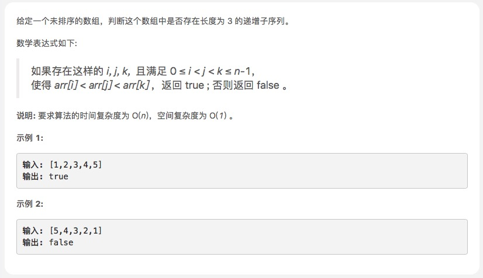

递增的三元子序列

思路
本题的思路非常的巧妙！
首先，新建两个变量 small 和 mid ，分别用来保存题目要我们求的长度为 3 的递增子序列的最小值和中间值。
接着，我们遍历数组，每遇到一个数字，我们将它和 small 和 mid 相比，若小于等于 small，则替换 small；否则，若小于等于 mid，则替换 mid；否则，若大于 mid，则说明我们找到了长度为 3 的递增数组！
上面的求解过程中有个问题：当已经找到了长度为 2 的递增序列，这时又来了一个比 small 还小的数字，为什么可以直接替换 small 呢，这样 small 和 mid 在原数组中并不是按照索引递增的关系呀？
Trick 就在这里了！假如当前的 small 和 mid 为 [3, 5]，这时又来了个 1。假如我们不将 small 替换为 1，那么，当下一个数字是 2，后面再接上一个 3 的时候，我们就没有办法发现这个 [1,2,3] 的递增数组了！也就是说，我们替换最小值，是为了后续能够更好地更新中间值！
另外，即使我们更新了 small ，这个 small 在 mid 后面，没有严格遵守递增顺序，但它隐含着的真相是，有一个比 small 大比 mid 小的前·最小值出现在 mid 之前。因此，当后续出现比 mid 大的值的时候，我们一样可以通过当前 small 和 mid 推断的确存在着长度为 3 的递增序列。 所以，这样的替换并不会干扰我们后续的计算！
var increasingTriplet = function (nums) {
var len = nums.length;
if (len < 3) return false;
var small = Infinity, mid = Infinity;
//这里一开始错误使用forEach，忘了forEach下return不会跳出整个方法。
for (var num of nums) {
if (num <= small) {
small = num;
} else if (num <= mid) {
mid = num;
}
else if (num > mid) {
return true;
}
}
return false;
};
2. DP解法
和LIS一样，只要计算了LIS长度为3就可以了
/**
* @param {number[]} nums
* @return {boolean}
*/
var increasingTriplet = function(nums) {
let longest = [], count;
for(let i = 0; i < nums.length; i++) {
count = 1;
for(let j = 0; j < longest.length; j++) {
if(nums[i] > nums[j] && count <= longest[j]) {
count = longest[j] + 1;
}
}
longest.push(count);
if(count >= 3) {
return true;
}
}
return false;
};